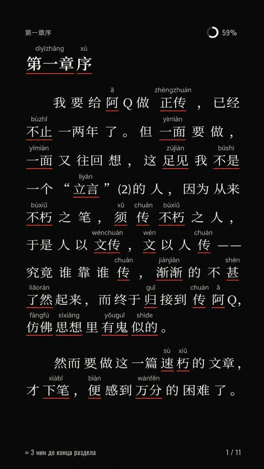
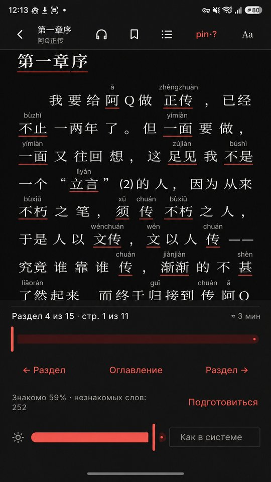
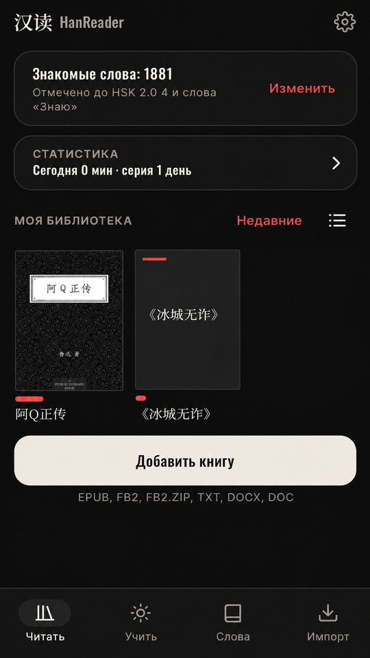
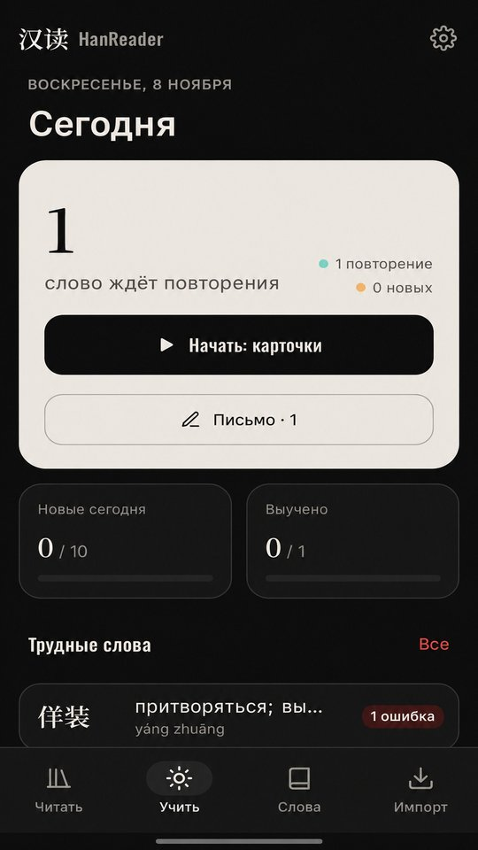

Над словами — пиньинь, перевод — по одному нажатию, незнакомые слова — в карточки вместе с предложением из книги. Без интернета, рекламы и регистрации.
Android 8 и новее · бесплатно · что нового в бете




Нашёл ошибку, есть идея или вопрос — напиши. Если приложение закрылось с ошибкой, при следующем запуске оно предложит отправить отчёт.